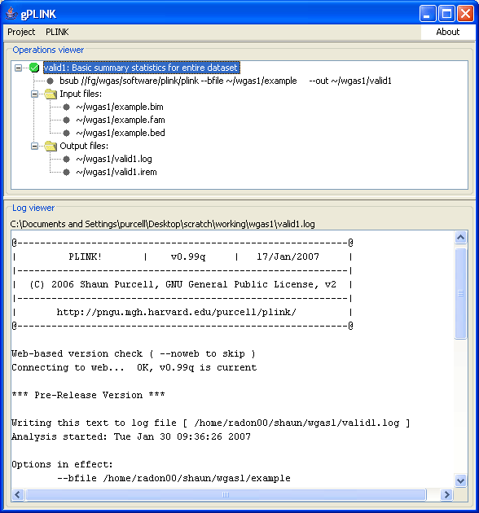

|  |
Browsing the results
Clicking on the finished operation, you will see a tree that lists:
- The fileroot and description
- The actual PLINK command run
- The associated input files
- The associated output files
The bottom panel shows the LOG file from this PLINK job.
Previous | Next
|